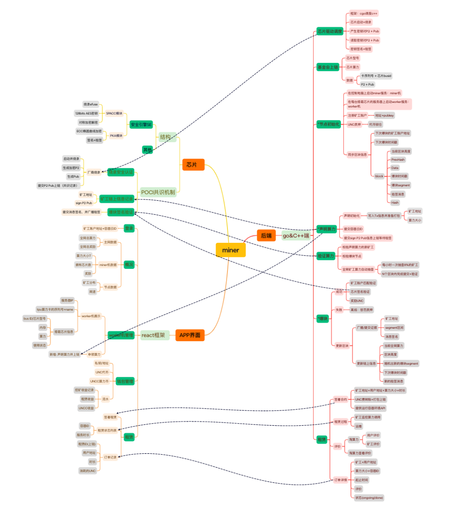
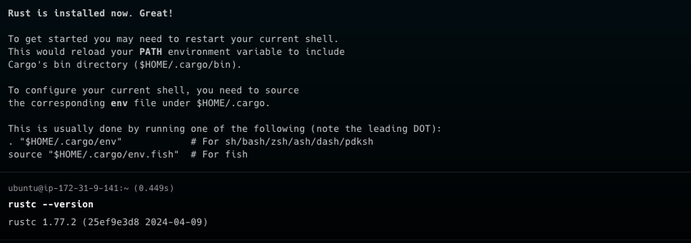
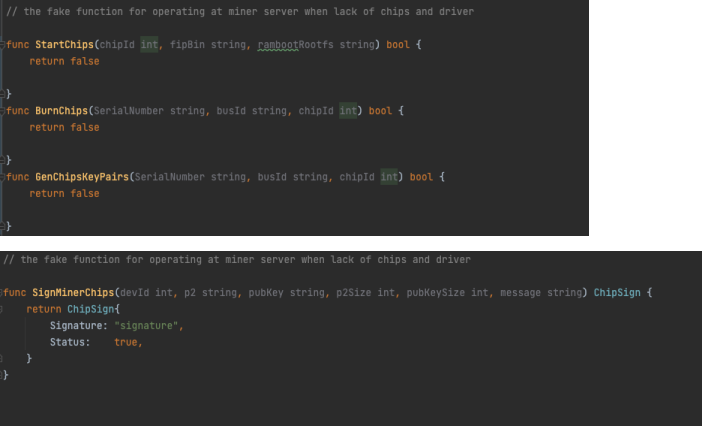

Introduction
Welcome to the utility cook guide!
The target audience of this guide are developers of node itself. If you are a user of unc-node (either a contract developer, or validator running a node), please refer to the user docs at https://docs.xyz666.org.
This guide is built with mdBook from sources in the utility repository. You can edit it by pressing the "edit" icon in the top right corner, we welcome all contributions. The guide is hosted at https://docs.github.io/utility/.
The guide is organized as a collection of loosely coupled chapters -- you don't need to read them in order, feel free to peruse the TOC, and focus on the interesting bits. The chapters are classified into three parts:
- Architecture talks about how the code works. So, for example, if you are interested in how a transaction flows through the system, look there!
- Finally, the Misc part holds various assorted bits and pieces. We are trying to bias ourselves towards writing more docs, so, if you want to document something and it doesn't cleanly map to a category above, just put it in misc!
If you are unsure, start with Overview and then read Run a Node
Overview
This document describes the high-level architecture of framework. The focus here is on the protocol itself.
Bird's Eye View
If we put the entirety of framework onto one picture, we get something like this:

Don't worry if this doesn't yet make a lot of sense: hopefully, by the end of this document the above picture would become much clearer!
- Node talks about how the code works. So, for example, if you are interested in how a transaction flows through the system, look there!
- Miner describe, broadly, how we write code. For example, if you want to learn about code style, issue tracking, or debugging performance problems, this is the chapter for you.
- Container Cloud describe, broadly, how we write code. For example, if you want to learn about code style, issue tracking, or debugging performance problems, this is the chapter for you.
Overview
This chapter describes various development processes and best practices employed at node.
一. Environmental preparation
Our nodes are based on Ubuntu 2004/2204 X86-64 system, 16core, 500G minimum configuration. The following operations are all deployed under this system.
1. Deploy machines
Deployment related work
# miner-mach The machine is pre-installed with node.js
# Use curl to download the Node.js 18.x or beyond installation script
curl -sL https://deb.nodesource.com/setup_18.x | sudo -E bash -
# Install Node.js
sudo apt-get install -y nodejs
# Install pm2
npm install -g pm2
# Install rust/cargo
curl https://sh.rustup.rs -sSf | sh
rustc --version
we get something like this:

- Install commonly used system tools: git, curl, wget, build-essential
- awk/df is generally installed by default. Other tools can be installed using the following commands:
sudo apt install git curl wget build-essential -y
- Install openssl dependencies
sudo apt install pkg-config libssl-dev libclang-dev -y
sudo apt-get install --assume-yes libudev-dev
- Install unc-cli 和 unc-node
# Install unc-cli tool
curl --proto '=https' --tlsv1.2 -LsSf https://github.com/utnet-org/utility-cli-rs/releases/latest/download/unc-installer.sh | sh
# download unc-node, ex: 2004/2204/2404 pre-binaries
wget -O - https://github.com/utnet-org/utility/releases/download/v0.12.4/x86_64-ubuntu-2004-unc-node.tar.gz | tar -xz
wget -O - https://github.com/utnet-org/utility/releases/download/v0.12.4/x86_64-ubuntu-2204-unc-node.tar.gz | tar -xz
wget -O - https://github.com/utnet-org/utility/releases/download/v0.12.4/x86_64-ubuntu-2404-unc-node.tar.gz | tar -xz
# Unzip the unc-node binary file and place it in /opt/unc-node/, which will be useful later.
sudo mkdir /opt/unc-node
sudo chmod 777 /opt/unc-node
cp unc-node /opt/unc-node/
we get something like this:

2. Machine standard configuration
- Make sure that the version of libc can run the binary program compiled by our rust
ldd --version
ldd (Ubuntu GLIBC 2.35-0ubuntu3.7) 2.35
Copyright (C) 2022 Free Software Foundation, Inc.
This is free software; see the source for copying conditions. There is NO
warranty; not even for MERCHANTABILITY or FITNESS FOR A PARTICULAR PURPOSE.
Written by Roland McGrath and Ulrich Drepper.
- Node needs to be installed correctly on the machine (the shell can correctly execute node and npm commands), version 18+
node -v
v21.7.3
二. Writing configuration files
This is a key step for new miner nodes Create a new description directory below and add the corresponding configuration file in it
# testnet node init directly use binaries
/opt/unc-node/unc-node --home /opt/unc-node init --chain-id testnet --download-genesis --download-config
# download snapshot data （optional）
# install rclone 1.66.0 or beyond
# Linux
$ sudo apt install rclone
$ mkdir -p ~/.config/rclone
$ touch ~/.config/rclone/rclone.conf
# rclone.conf
[unc_cf]
type = s3
provider = Cloudflare
endpoint= https://ec9b597fa02615ca6a0e62b7ff35d0cc.r2.cloudflarestorage.com
access_key_id = 2ff213c3730df215a7cc56e28914092e
secret_access_key = b28609e3869b43339c1267b59cf25aa5deff4097737d3848e1491e0729c3ff6c
acl = public-read
# download data
$ rclone copy --no-check-certificate unc_cf:unc/latest ./
$ latest=$(cat latest)
$ rclone copy --no-check-certificate --progress --transfers=6 unc_cf:unc/${latest:?}.tar.gz /tmp
# Unzip the snapshot to /opt/unc-node/data
tar -zxvf /tmp/${latest:?}.tar.gz -C /tmp && mv /tmp/${latest:?}/data /opt/unc-node
we get something like this:

三. Create an account and transfer money
Use unc cli to create accounts/transfer/add key operations
# create new accounts use case, use the account id you created instead of `fd09e7537ee95fd2e7b78ee0a2b10bb9db4ebe65dc94802ce420c94ebb25bc43` in the use case
unc account create-account fund-later use-auto-generation save-to-folder ~/.unc-credentials/implicit
# as follows:
# fd09e7537ee95fd2e7b78ee0a2b10bb9db4ebe65dc94802ce420c94ebb25bc43.json
# Give some funding to the newly created account through the unc foundation account or faucet (pledge requires unc tokens) `fd09e7537ee95fd2e7b78ee0a2b10bb9db4ebe65dc94802ce420c94ebb25bc43`
unc tokens unc send-unc fd09e7537ee95fd2e7b78ee0a2b10bb9db4ebe65dc94802ce420c94ebb25bc43 '100000 unc' network-config testnet sign-with-keychain send
## Execute the `touch validator_key.json` command in the /opt/unc-node directory, and fill in the verifier information from the account created above ~/.unc-credentials/implicit
{
"account_id": "fd09e7537ee95fd2e7b78ee0a2b10bb9db4ebe65dc94802ce420c94ebb25bc43"
"public_key":"ed25519:EYM66gAFekoEgLjicPyvZQiFRrbvNsWjVDQQ11fASV3Q",
"private_key":"ed25519:3NVx4sHxBJciEH2wZoMig8YiMx1Q84Ur2RWTd2GQ7JNfWdyDxwwYrUR6XtJR3YcYeWh9NzVEmsnYe2keB97mVExZ"
}
we get something like this:

四. Formal deployment of services and configuration
pre-binaries installation method
1. Deployment script
- The contents of the
unc-node.ecosystem.config.jsfile are as follows: Among them, the download node path above unc-node
module.exports = {"apps":[{"name":"unc-node","script":"/opt/unc-node/unc-node","env":{"HOME":"/opt/unc-node"},"exec_mode":"fork","watch":"false","autorestart":true,"restart_delay":5000,"cwd":"/opt/unc-node","args":" --home=/opt/unc-node run"}]}
we get something like this:

2. Service startup and shutdown
# Running node
pm2 start unc-node.ecosystem.config.js
# Stopping node
pm2 stop unc-node.ecosystem.config.js
# View status
pm2 list
# View log
pm2 logs
# More command or GPT pm2
pm2 --help
Check the running status of the service through pm2 list For example, on miner-mach1, the pm2 list is explicitly as follows:
root@ip-172-31-9-141:/opt/unc-node# pm2 list
┌────┬─────────────┬─────────────┬─────────┬─────────┬──────────┬────────┬──────┬───────────┬──────────┬──────────┬──────────┬──────────┐
│ id │ name │ namespace │ version │ mode │ pid │ uptime │ ↺ │ status │ cpu │ mem │ user │ watching │
├────┼─────────────┼─────────────┼─────────┼─────────┼──────────┼────────┼──────┼───────────┼──────────┼──────────┼──────────┼──────────┤
│ 0 │ unc-node │ default │ N/A │ fork │ 517383 │ 33s │ 11 │ online │ 0% │ 270.4mb │ root │ enabled │
└────┴─────────────┴─────────────┴─────────┴─────────┴──────────┴────────┴──────┴───────────┴──────────┴──────────┴──────────┴──────────┘
It can be seen that the unc-node service on this machine has started normally and is running normally without repeated restarts.
Use pm2 logs to ensure that the unc-node service has been started correctly, the chain synchronization snapshots have been downloaded or synchronized, there are no error level logs, and the block height is printed normally.

Docker installation method
Run the image from the command line
# Set node store location
export UNC_HOME=$HOME/.unc
# Set the node type
export CHAIN_ID=testnet
# Only Set Once Time init node after `unset INIT`
export INIT=true
docker run \
-v $HOME/node-store:$UNC_HOME \
-e CHAIN_ID=$CHAIN_ID \
-e UNC_HOME=$UNC_HOME \
-e INIT=$INIT \
-p 3030:3030 -p 12345:12345 \
--name unc-node \
ghcr.io/utnet-org/utility:latest
Or
docker-compose.yml
version: "3.8"
services:
unc-node:
image: ghcr.io/utnet-org/utility:latest
environment:
- UNC_HOME=$HOME/.unc
- CHAIN_ID=testnet
- INIT=true
volumes:
- ${HOME}/node-store:$HOME/.unc
ports:
- 3030:3030
- 12345:12345
# view services
docker-compose up -d
docker ps
docker logs -f unc-node
docker exec -it <container-id> /bin/bash
3. Initiate pledge (provided there is an account with token)
# Directly initiate pledge, 100K unc
unc pledging directly pledge-proposal fd09e7537ee95fd2e7b78ee0a2b10bb9db4ebe65dc94802ce420c94ebb25bc43 ed25519:EYM66gAFekoEgLjicPyvZQiFRrbvNsWjVDQQ11fASV3Q '100000 UNC' network-config testnet sign-with-keychain send
# Check the direct pledge amount
unc pledging directly view-pledge fd09e7537ee95fd2e7b78ee0a2b10bb9db4ebe65dc94802ce420c94ebb25bc43 network-config testnet now
# view tx status View tx status value Success is required
unc transaction view-status EWHzhriCRTbDVd9SH6Vk88hSHqzJ7pipXW6eUhWTBkvS network-config testnet
4.Register miners to upload to the chain (only the foundation has the authority to operate)
## Use the foundation account unc to register Rsa2048 keys, ***batch_register.json.sample is the miner rsa keys file, unc.json is the foundation unc account keys file***
unc extensions register-rsa-keys unc use-file ~/keys/batch_register.json.sample with-init-call network-config custom sign-with-access-key-file ~/.unc-credentials/unc.json send
Add rsa public key to the validator account, such as fd09e7537ee95fd2e7b78ee0a2b10bb9db4ebe65dc94802ce420c94ebb25bc43
unc account add-key fd09e7537ee95fd2e7b78ee0a2b10bb9db4ebe65dc94802ce420c94ebb25bc43 grant-full-access use-manually-provided-public-key rsa2048:2TuPVgMCHJy5atawrsADEzjP7MCVbyyCA89UW6Wvjp9HrAzK4ZdyEHxs7qVnPrrF3R6w3zNJoHz828bNNJq9f6FPqyq9hsRP47qNXu1mcxeqWmRr8TKTBMLQNzNcjZVm6qX2BiSdXetAZsjPBMC6TyC2smee4s5Mqc4uh5rc5v7Z6nHWGxttHbhHGUCyWtgNGgPevFB2odsTdaXgcgWKtR3zLD6qrbaw631yNEJhverkLMrQJz436L21JWkgXpcTDRYPNWnk7DbztgA6RcgLmve3EG125eW2c2Bj7DkkWAVeWHZnXboDM8kYhAEbfRqUuKwn9K1m9adMqfig4xmM5wxGGABu5dD1gmthQRytLF1y3o2kpTtgrsNyBVTkqV7eMR9qJhUxwiU1rXdQKJ network-config testnet sign-with-keychain send
5.Initiate on-chain challenges (miners receive computing power and initiate challenges periodically)
# ***challenge.json.sample is the challenge information, rsa_signer_key.json is the rsa keys file, this is simulated, the real one must be initiated by the computing machine***
unc extensions create-challenge-rsa fd09e7537ee95fd2e7b78ee0a2b10bb9db4ebe65dc94802ce420c94ebb25bc43 use-file ~/keys/challenge.json.sample without-init-call network-config custom sign-with-access-key-file ~/keys/rsa_signer_key.json send
- batch_register.json.sample Register miner configuration information, the field
powerdefault unit is Tera which is 10.pow(12)
[
{
"miner_id": "miner0",
"public_key": "rsa2048:2TuPVgMCHJy5atawrsADEzjP7MCVbyyCA89UW6Wvjp9HrAzK4ZdyEHxs7qVnPrrF3R6w3zNJoHz828bNNJq9f6FPqyq9hsRP47qNXu1mcxeqWmRr8TKTBMLQNzNcjZVm6qX2BiSdXetAZsjPBMC6TyC2smee4s5Mqc4uh5rc5v7Z6nHWGxttHbhHGUCyWtgNGgPevFB2odsTdaXgcgWKtR3zLD6qrbaw631yNEJhverkLMrQJz436L21JWkgXpcTDRYPNWnk7DbztgA6RcgLmve3EG125eW2c2Bj7DkkWAVeWHZnXboDM8kYhAEbfRqUuKwn9K1m9adMqfig4xmM5wxGGABu5dD1gmthQRytLF1y3o2kpTtgrsNyBVTkqV7eMR9qJhUxwiU1rXdQKJ",
"power": 100,
"sn": "serial number here c0",
"bus_id": "bus info c0",
"p2key": "p2keys1 c0"
},
{
"miner_id": "miner1",
"public_key": "rsa2048:2TuPVgMCHJy5atawrsADEzjP7MCVbyyCA89UW6Wvjp9HrCGrtsUG9dcY8iaDtbnNTuA8PiVhpLgeiznHF3SUjAdYk4bSnwTShu5oNY5o3z1LYcgjiZhAoVi4Wh1MmZUqPSecUAMRAdUkXtjk9c2g33xxvVWA7Bc9d4E2hJjzxPoyBWSvYAebNQahxNk3Pio942Gy9kaX79j2evzNLuNvNPpc8ajwBcSbaufWMe3FYfbX8tVsdUA9AhYem36a2U3SNZQtxVF4pGBp9pz327w9debh4hf8jzSHoffh4oxGrC4peAEeJFjdR6rnSPFdzvF1o6gWF1EFqdz1ksWCaYyAgapk2WNPU9i9JK66XqW9xyaikrojcX7oZLnMCKi51k1mr7AefJzjh4iUoJ5SHn",
"power": 200,
"sn": "serial number here c1",
"bus_id": "bus info c1",
"p2key": "p2keys1 c1"
},
{
"miner_id": "miner2",
"public_key": "rsa2048:2TuPVgMCHJy5atawrsADEzjP7MCVbyyCA89UW6Wvjp9HrBcvkfoM33uFehzP1wtSX7XwvCGhTPQdjjitsZ9zjbLVqLEnuZVYjZmArhJLFJrukpXxo7yVQBn3BH8bZVR5NBWmnRwvSGThyVgKssvQ2m6uLC9PDM4b7VcyJZGoZrrgTU75e851CcxconxvQZ7CZjbpcZ2N3rv7nzWceUKZUfgqoDyEmwsxM44LeB6Z3Rhfe2gHyZSm2JZj2HeyvyEa23dvehUPvZ8ZpUnsR8mRJThBUWSfPjiX5yX97584h6FEh4W3YAu9AFsmvLQULsYAtmTe6SxWSa8GdBizE5tUW5SfU73cF6Gu1FG8uaNeXCXiR8cEsMPjhmJuwuMYdHsAQbVWzWgsXMgyVFtwep",
"power": 300,
"sn": "serial number here c2",
"bus_id": "bus info c2",
"p2key": "p2keys1 c2"
}
]
- challenge.json.sample Activate computing power and initiate challenge configuration information
{
"public_key": "rsa2048:2TuPVgMCHJy5atawrsADEzjP7MCVbyyCA89UW6Wvjp9HrAzK4ZdyEHxs7qVnPrrF3R6w3zNJoHz828bNNJq9f6FPqyq9hsRP47qNXu1mcxeqWmRr8TKTBMLQNzNcjZVm6qX2BiSdXetAZsjPBMC6TyC2smee4s5Mqc4uh5rc5v7Z6nHWGxttHbhHGUCyWtgNGgPevFB2odsTdaXgcgWKtR3zLD6qrbaw631yNEJhverkLMrQJz436L21JWkgXpcTDRYPNWnk7DbztgA6RcgLmve3EG125eW2c2Bj7DkkWAVeWHZnXboDM8kYhAEbfRqUuKwn9K1m9adMqfig4xmM5wxGGABu5dD1gmthQRytLF1y3o2kpTtgrsNyBVTkqV7eMR9qJhUxwiU1rXdQKJ",
"challenge_key": "ed25519:8FhzmFG24qXxJ9BJLHTxwhxYY4yu4NV8YPxtksmC86Nv"
}
- rsa_signer_key.json The challenge is initiated using the rsa2048 keys signature file
{
"account_id": "miner-test1",
"public_key": "rsa2048:2TuPVgMCHJy5atawrsADEzjP7MCVbyyCA89UW6Wvjp9HrBWvq7Yc23gLm9CXF1USvSSR13bqqCKpu5cmWrvC7Ebn5uETJnePKEyG3RhQt8WFayJ1KnsaGa6ZBQDKd9MwFqqwaC6KXpCpTRKWho4NgXVhnCDLRjWehS7gKntWjH42Q1TMRLpWAkMtcAbqEJ2B4HjFiyWFQyHwGyvFYv8SkYKBPLgHy8bSvqJzbwB9C5HLqCbeEurmPV9r7MmBG6BZkpVbyYhJRaurf3RkdpEHJMtvy2WG8YWqbtxjGzkGeu2mC4xj4xGBonYgAVkoXp92TRLg4i3Te8weJnzT74YkzYFdQ7SnjJHPJF156W9o5HX67kqdfFqas6yqxnnVSMkw5o6JQr9iG5mxqy1QLx",
"private_key": "rsa2048:riiewRJm2wpE3rWTs1ikUc83so8ZXMX8vp9dUTnRgMC8GyfLr99MDwLmsGXjCMrdNrZBdvRZERvZ9HjFTHCqb6cGi4dEV7vcQwJND4Rd4CzHzaYc3WUC25Dmfp6HJM8usxH2mzqfZsvfMgNcPW6n2ESQ44yEkqsetwvn6pAiKgVHEmaY2fa3HEoET8gNjGbpuATRtx5J3nhVf8Wk7v4UFbH5Z234C76rU3bKFXeeLYNDTnqDAjT6LNbRJsdPbMoQfHArmbv3AKzk3QAKwcyq1sxysUtx8uzb4feJ5EjXCR9RyBG27dTwbXfJNruKu49SYCd3Did5ae1bWMGhxzUrXXb7RZq9hikJCmmQLNGX7r5PrSenztiKTqhQxGKpMoHZp7RvReuK8czMidSeJy9EWWXGWrJL5ANN14YguDMpcEf5Db6e3XCJvt3iKfxCjx7pmoSUarqZg4EkXkCMhhkz38f9L6Pedb45RQFZejrWreM5Bh3v1nEWAtUPZY9y4z3jY4ppGP1YBkqLnwc5psZ5bgAVkeRbsWvWA871L2gNXhg5ecPJBQiU8BJDtwEZnyGUBSaSYESQPSwrtzwCxj7FgrxsuJeXamFppgH7C6tisybaaP9M9159ZRFZUjZFwRfWR8ZocxVkHDgBJE7s2hDoMxZxufVxCFeuKzmw7EDmq3AKmLXw7FpUXKwL13NcatuVj2yqiemNchdqwi5Ro51Bp2kv4nGpCWYknRT66KzCGG1DdCJxXpgBpi6q75jx6KeUwpQQKK2AvNm4283M3gaJ4Tnqv4Gzh1tQ5Jt4pK94EYwMSgy62V2bshBRVxTXAzECWkxxmuYtm9ahRMr1mqZi1AfQoswxhAVYvB2g59ZdKs4tSiBtsQZVT7emC5mo7XEFdVqBpcA7wYHKnQ15sevbDyVyt3PsM2Gx4tVKYHUhyA85kUdX8UwGGscXDsEdvdD22QQNSspvBNYBd2XUXv7EimAx11ncxMa9RaCHpizrSV7aSnVHY1GEJD6Y22K1V8jqj54m3h17LRUaHw6Liv2QrqKq5BpyP4rK5SX8H19u76qjZRztkUG4qRX16YhrHTg7KgpMZxpVGCHHce5qKTcKeRHHsyYE1Jzkdp5K8yCFKwtAWUaZeoaqJBWhpxTzBucDrwCzfyVpSNXhkx9W8tmKfW45HNNpD5wAXWoDdJPqJrAMahC2cPthKhkZQfND5WTiiWtRFroVqoAyTbVdMUxvTJUKS1r9CDCFgoJFRPnndz2fbdSSabLMcCasyV7Aq6X2ckVQW4Mq69GJHTyokyWHA7d9nmPQCACdSTtAbnPtdeG4tXmSYqELtCL43hLLx8m2MrDWdFgrpkXjEWdPS8p9QEuv86opKxiU3MjYgBF9oUfdSV4nmbDFR7H1LQ5sKcCxg7Z515VSCVwCKbRgtvtcUV6hmmKu7HBVmyiNEpjy3EWPM2GmPC84qs2wm3j2tamnXgKU9ZtiPpD5KAueYURbxurempUUcBwyLmSiHdfrGiiBZw8FkZRFuAqooa2QxNRzNXEmVGKRVDunUhDi2S4cues452T1tdqpMvtvBwd3EjfT6yNxtSu6o8fjnJqSHRt6JrKQRPagdN7mfV5Rs1zZDv5oaKXUwEwSeyx9pwQoPMPacEkMJ4Ap5pVGdDT8bZn"
}
Various types of keys generation tools keypair-generator
Generate various keys for signer validator node
# prepare
git clone https://github.com/utnet-org/utility.git
cd utility
# rsa keys
cargo run --package keypair-generator --bin keypair-generator -- --home=~/keys --account-id=miner0 --generate-config signer-keys --key-type=2 --num-keys=4
# signer key
cargo run --package keypair-generator --bin keypair-generator -- --home=~/keys --account-id=miner0 --generate-config signer-keys --key-type=0 --num-keys=1
# node key
cargo run --package keypair-generator --bin keypair-generator -- --home=~/keys --account-id=miner0 --generate-config node-key
# validator key (a.k.a Create a wallet with keypair-generator)
cargo run --package keypair-generator --bin keypair-generator -- --home=~/keys --account-id=miner0 --generate-config validator-key
At this point, the node has been cold started. You can use unc related tools to perform account related operations, and use pm2 to monitor the node.
Overview
This chapter describes various development processes and best practices employed at miner.
一. Environmental preparation
commander machine requires version of golang 1.20 or above. And worker machine is based on Ubuntu 2004/2204 system, not only with golang 1.20，but also the installation of OpenSSL library to run the chip driver.
down miner：
git clone https://github.com/utnet-org/uminer
二. compile and start miner service
1. compile and start commander machine
enter./miner-server, take this as root directory
if the commander machine don't possess the chip and driver environment, two files needed to be modified：./api/chipApi/burn.go && sign.go, make notation of the driver function, changing to a pseudo function with the same name to assure the compilation pass.

proceed to other command execution：
# run the golang dependence
go mod tidy
# On Ubuntu, use apt to install：
sudo apt-get install protobuf-compiler
# On macOS, use Homebrew to install：
brew install protobuf
# install protoc-gen-go
go install google.golang.org/protobuf/cmd/protoc-gen-go
# add PATH
export PATH=$PATH:$GOPATH/bin
# run chip gprc service：enter ./api/chipApi/rpc，and run：
protoc --go_out=. --go-grpc_out=. ./chip.proto
# do similar operation to all the rest of chainApi and containerApi
# run server gprc service：enter./serverConf, and run：
protoc --go_out=. --go-grpc_out=. ./conf.proto
# compile commander主程序：enter./cmd/run， and compile：
go build -o ../commanderserver
# commanderserver.sh will be compiled at ./cmd，do execute：
../commanderserver --serverip=addr --workerip=addr1,addr2,... --node=addr0 startcommander
# the meaning of configuration is shown: addr is the ip address of commander machine，addr1,addr2,...is the worker address communicated by commander，addr0 is the address of node.
# now the commander machine is working functionally.
2. compile and start worker machine
note：worker machine is the one equipped with computation TPU chips，and commander machine will coordinate with worker，node and container cloud server. They are essentially different, commander does not have to hold chips. worker机的任务仅仅只是执行和芯片驱动有关的任务，如烧录，产生密钥和签名。
# enter./bm_chip, take it as root directory
# enter ./src and run：
g++ -shared -o libchip.so *.cpp ../bmlib/src/*.cpp ../bmlib/src/linux/*.cpp ../common/bm1684/src/common.c -I../bmlib/include -I../bmlib/src/linux -I../common/bm1684/include -I../config -I/usr/local/opt/openssl/include -L/usr/local/opt/openssl/lib -lssl -lcrypto -fPIC
# it generates the lipchip.so file under the same directory，make a copy to the following position：
cp ./libchip.so /usr/lib/ (or cp ./libchip.so /usr/local/lib/)
# leave the bm_chip, back to miner-server root directory，and compile the go file same as when activating commander，change the name of executable file：
go build -o ../workerserver
# workerserver.sh will be compiled at ./cmd，do execute：
../workerserver --serverip=addr startworker
# only a configuration of "addr" is needed for the ip address of worker machine, and now the worker machine is working functionally.
Overview
This chapter describes various development processes and best practices employed at conatiner.
Overview
This chapter holds various assorted bits of docs. If you want to document trouble shotting, put it here!
TroubleShooting
Q: 是不是只需要部署miner server和worker就行，node不需要部署？
A: 部署node作为全节点使用。unc node应该部署在miner机器上。
Q: miner server和worker启动有没有先后顺序？
A: 启动顺序应该没有依赖关系，最好使用守护模式。例如，使用pm2守护node。建议先部署worker，然后部署unc-node和miner。
Q: worker启动后暴露的端口是多少？配置在cloudflare tunnel里面，然后才能在启动worker的时候指定这个ip。
A: 端口是7001。
Q: miner server在启动的时候，--node=addr0，这个node地址是什么？
A: node地址就是testnet/mainnet的地址，unc-node的3030端口。
Q: worker server启动的时候，--service ip是写区域网的ip还是写被cloudflare代理的域名地址？
A: 要通信的话，填写代理后的cf host api地址，使用cf tunnel打洞。
Q: key文件放在worker机的哪个目录，需不需要做什么操作？
A: key文件放在bm_chip/src/key目录下，不需要进行任何操作，只需等待命令读取。
Q: worker的服务端口是什么？server服务是否需要开启一些来自外部的安全组入站规则？
A: worker的服务端口是3030。node需要开放TCP端口12345和3030，12345作为对等节点的所有入站流量，3030可以考虑加入白名单。
Q: $ sudo go build -o ../workerserver no Go files in /opt/uminer/miner-server报错了。
A: 先执行go mod tidy。
Q: protoc --go_out=. --go-grpc_out=. ./chip.proto报错，提示没有安装protoc。
A: 执行go install google.golang.org/protobuf/cmd/protoc-gen-go，然后设置路径：export PATH=$PATH:$GOPATH/bin。在各自目录下，对应的proto文件都执行一遍。
Q: unc-node、unc-cli和miner server/worker的关系是什么？
A: unc-node和unc-cli是节点的一部分，属于激励层面的链。miner通过调用worker、unc-node和unc-cli来完成任务。
Q: 执行cargo install unc-validator报错了。
A: 执行sudo apt-get install make。
Q: minerserver启动的时候指定了worker IP，node的地址就是这个unc-node的地址吗？
A: 在启动minerserver时，使用--node参数指定的是unc-node的地址，端口为3030。